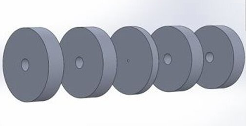
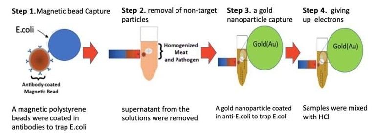
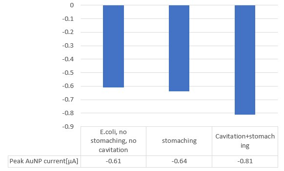

Pathogen Detection via Hydrodynamic Cavitation

Overview
This undergraduate thesis demonstrated the use of hydrodynamic cavitation for food disinfection — specifically, improving the recovery rate of E. coli O157:H7 from contaminated ground beef for electrochemical detection. E. coli causes an estimated 73,000 illnesses and 60 deaths annually in the United States, and faster, more sensitive detection methods are critical for food safety.
Problem
Standard methods for separating pathogens from food include stomaching (mechanical agitation), chemical degradation, and biological separation. However, stomaching reaches a limiting concentration where bacterial detachment stops. Hydrodynamic cavitation — the growth and collapse of vapor bubbles due to rapid pressure changes — was hypothesized to improve pathogen recovery beyond what stomaching alone can achieve.
Method
- Cavitation device: Built a custom orifice chamber using laser-cut acrylic sheets, sandwiched between extension chambers and driven by a peristaltic pump
- Sample prep: Ground beef inoculated with E. coli O157:H7 (ATCC 700728) at both high and low concentrations
- Immunomagnetic separation: Magnetic beads coated with anti-E. coli antibodies captured target bacteria; gold nanoparticles provided the electrochemical signal
- Detection: Electrochemical current measured on CHI electrodes — higher current indicates greater bacterial recovery

Results
- Samples processed with hydrodynamic cavitation showed increased electrochemical current response compared to stomaching alone
- Cavitation combined with stomaching produced the highest recovery rates
- The method confirmed that cavitation separates more pathogens from the food matrix, improving the sensitivity of downstream electrochemical detection

Engineering contributions
- Designed a SolidWorks medical device, increasing lab productivity by 17% and reducing costs and operation time by 30% and 25%, respectively
- Built 3D prototypes using AutoCAD and a laser cutter
- Tested fluid mechanics with ANSYS-CFX to optimize cavitation chamber geometry
Publication
"Detecting Pathogens Using Hydrodynamic Cavitation." University of Utah Annual BME Senior Research Symposium, 2020. Poster presentation.